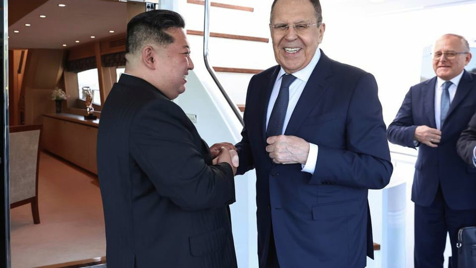

世界苦茶07月13日新闻 | 32条 | 特朗普宣布对欧盟墨西哥征收30%关税

特朗普宣布对欧盟墨西哥征收30%关税 | 甘肃幼儿园铅中毒案提级管理 | 朝鲜已占俄罗斯弹药供应量四成 | 多家车企骗补被查
今日三条新闻分析
苦茶数据
美元兑人民币：7.17（昨日7.17，前日7.17）
美元兑日元：147.33（昨日147.10，前日146.06）
上证指数：休市（昨日3510，前日3546）
标普500指数：休市（昨日6259，前日6280）
比特币：117848（昨日117671，前日116511）
布伦特原油：70.69（昨日68.79，前日70.16）
中国新闻
• 中菲就仲裁案再交锋 ：南中国海仲裁案裁决星期六届满九周年，中菲再度隔空交锋。中国外交部长王毅批评仲裁庭越权审理，滥用《联合国海洋法公约》争端解决机制；菲律宾外交部长拉扎罗则表明，菲律宾将继续坚决反对任何企图削弱仲裁胜利的行径。海牙常设仲裁法院在2016年7月12日做出对中国不利的裁决，其中包括中国根据“九段线”主张的历史性权利没有法律依据且有违《联合国海洋法公约》；南沙群岛没有一个岛礁能产生延伸的海洋区域如专属经济区或大陆架。据新华社报道，王毅星期五在吉隆坡出席东亚合作年度系列外长会议时说，菲律宾诉求的实质事关中国南沙群岛的领土主权，也直接涉及海洋划界，而领土问题不属于《联合国海洋法公约》管辖范畴，海洋划界早在2006年就已被中国政府声明明确排除。
• 甘肃幼儿园铅中毒追责 ：中国甘肃省天水市一所幼儿园发生集体铅中毒事件后，目前已有八人被刑拘。甘肃省宣布成立调查组，提级调查幼儿血铅异常问题。据中国央视新闻报道，甘肃省星期六成立省委省政府调查组，提级调查天水市麦积区褐石培心幼儿园幼儿血铅异常问题。调查组由省委省政府主要负责人为组长，省纪委监委、省教育厅、省公安厅、省生态环境厅、省卫生健康委、省市场监管局等部门参加，并请中国生态环境部、国家卫生健康委等部委专家参与。中国国务院食安办派出工作组指导督办。
• 王毅吁推进中澳关系 ：中国外交部长王毅在与澳大利亚外长黄英贤会面时说，要保持改善中澳关系势头，妥善管控分歧，积极推动两国关系向前发展。据中国外交部官网消息，王毅星期五在吉隆坡与黄英贤会面时说，过去三年，中澳关系稳定下来、实现转圜并取得积极成果，证明只要坚持伙伴关系的正确定位，两国关系就能稳定发展，不断取得成果。王毅指出，澳方奉行理性务实的对华政策，符合两国利益，也符合时代潮流。中方愿同澳方一道努力，筹备好下阶段高层交往，保持改善势头，妥善管控分歧，以更加积极的态度推动中澳全面战略伙伴关系向前发展。
• 西夏陵列入世界遗产 ：世界遗产大会通过决议，将位于中国银川的“西夏陵”列入《世界遗产名录》。至此，中国世界遗产总数达到60项。综合新华社、央视网报道，当地时间星期五，在法国巴黎召开的联合国教科文组织第47届世界遗产大会通过决议，将“西夏陵”列入《世界遗产名录》。西夏陵是中国西北地区11至13世纪由党项族建立的西夏王朝的陵墓遗址群，位于宁夏回族自治区银川市，坐落于贺兰山山脉南段东麓，分布范围近40平方公里。
• 陆海警现身东沙海域 ：台湾军方汉光演习进行中，中国大陆两艘海警船先后出现在东沙海域，台湾海巡署称，大陆海警船不排除是藉由台军演习期间，以灰色地带模式测试台湾海上勤务部署。综合台湾联合报、自由时报报道，台湾海巡署东南沙分署称，东沙指挥部于星期三下午3时45分，在东沙岛东北方42.5海里处侦获大陆海警船“3101”航向东沙管辖水域，立即调派台南舰前往预置对应。台南舰抵达东沙东北方45海里位置，随船监控海警船动向，并实施广播驱离，期间台南舰与大陆海警船最近距离仅0.6海里。
• 上海办公楼空置率上升 ：上海办公楼新增需求不足，整体空置率超过五分之一。据《华夏时报》报道，世邦魏理仕发布报告显示，2025年上半年，上海写字楼市场呈现出新增需求不足、空置率上升的特征。报告指出，上海办公楼市场上半年共有四个新项目入市，累计供应量30.2万平米，整体空置率较去年年底上升0.3个百分点，达到22.4%。
• 日外相批解放军挑衅 ：日本外长岩屋毅在与中国外长王毅会晤时，针对中国军机异常接近日本军机表达关切，并敦促中国采取应对措施。综合日本放送协会和日经中文网报道，岩屋毅星期四在吉隆坡与王毅进行约40分钟会谈。岩屋在会上指出，针对中国军机异常接近日本自卫队飞机，以及中国海警局直升机涉嫌侵犯日本领空等行为，日本深表关切，并要求中国采取应对措施。
• 陆学者提第二次西安事变 ：中国大陆网红学者高志凯发演讲表示，呼吁北京当局考虑类似“第二次西安事变”的策略，如果岛内有人控制台湾总统赖清德，就可采“智取”方式解决台湾问题。据中国大陆媒体观察者网星期五在微博上发布的视频，苏州大学讲席教授、全球化智库副主任高志凯在7月4日的演讲中，谈到台湾问题时说，“和统”渺茫、“武统”成本太高，代价太大，中间有没有一个“第二次西安事变”？他接着解释：“当年‘西安事变’就是蒋介石率领国军把我们共产党给包围了，要剿灭共军。突然之间张学良、杨虎城将军就把蒋介石扣在华清池了，逼他同意抗日统一战线。” （翻评：对民主体制没有任何了解，现在就算你扣着赖清德，他答应统一，台湾就能统一了吗？）
亚太印太新闻
• 台普发现金惹争议 ：台湾立法院院会星期五三读通过特别拨款条例，明定向每名台民众普发1万元新台币，却未纳入拨补台电的1000亿元。台湾执政的民进党立委批评，国民党和民众党立委之举是为救大罢免，将债留子孙。综合ETtoday新闻云和中时新闻网报道，对于立院上述决定，民进党立委吴思瑶称，如果普发现金造成物价上涨，请全民找国民党和民众党负责。民众党主席黄国昌星期六在反罢免松山后援会成立大会前受访时说，民进党的说法完全是侮辱台湾人民的智慧。普发现金的议题早已在公共政策上讨论，也获得了非常多民众的支持。
• 台火箭发射失败坠落 ：台湾民营火箭公司晋陞太空集团研制的火箭星期六在日本北海道发射升空后不久坠落，未能成为首个在日本本土成功发射火箭的外资企业。综合路透社、日本放送协会和台湾《联合报》报道，晋陞集团旗下日本子公司jtSPACE原定当天从北海道大树町的宇宙港发射一枚全长12米、重1.4吨、采用混合燃料推进的“VP01”两节式火箭，目标是抵达地球表面上方100公里的外太空。火箭于日本时间上午11时40分升空，但NHK画面显示，火箭升空不到一分钟即偏离正常轨道，随后坠落。
• 曹兴诚辞去顾问职 ：台湾联电创始人曹兴诚因个人因素，辞去总统府全社会防卫韧性委员会顾问职务。综合台湾《联合报》《自由时报》报道，曹兴诚自去年起担任总统府全社会防卫韧性委员会顾问，但有媒体发现，他的名字已从总统府官网的委员名单中撤下。总统府发言人郭雅慧星期五证实，曹兴诚已于6月26日委员会第三次会议期间，向总统赖清德提出辞去顾问职务的请求。
• 红高棉遗址列入世遗 ：柬埔寨50年前红高棉时期三处恶名昭著的集中营和刑场，被联合国教科文组织列入《世界遗产名录》。这三个历史遗址分别是M13集中营、堆斯凌罪恶馆及镇艾万人塚。M13集中营位于中部磅清扬省，根据柬埔寨当局提呈给联合国教科文组织的介绍，红高棉干部在这个集中营“试用多种审问、酷刑和杀戮的方式”；位于金边的S21集中营估计曾经关押1万5000名囚犯，他们在营内惨遭各种酷刑折磨；同样位于金边的镇艾万人塚是红高棉处决异己的刑场，1980年代当地的乱葬岗掘出了6000多具尸体。1975年至1979年红高棉统治期间，约200万人因饥荒、酷刑、苦役和大规模处决而丧命。
• 马国森林公园获世遗 ：马来西亚森林研究院属下的雪兰莪森林公园正式列入《世界遗产名录》，成为马国第六个获此殊荣的世界遗产地。马国旅游、艺术及文化部星期六发声明说，在法国巴黎召开的联合国教科文组织第47届世界遗产大会周五一致通过，将马国森林研究院（FRIM）的雪州森林公园列入《世界遗产名录》。声明说，这项申遗工作从2013年开始。“雪州森林公园是个独特的地方，它在全球范围内开创了通过人工造林，在废弃锡矿场大规模修复热带森林生态系统的先例。这不仅成功重建近似天然热带雨林的生态系统，更在树种多样和整体生物多样性方面取得显著成就，是全球森林生态修复工作的标杆。”
• 韩国辅助生育激增 ：韩国是全球生育率最低的国家，但当地生育诊所近年来的生意却蒸蒸日上，使人期盼韩国人口危机有望得到扭转。据英国广播公司报道，2018年至2022年间，韩国的生育治疗数量增长了近50%，达到20万起。去年，首尔每六个婴儿中就有一个通过体外受精术等辅助生育方式出生。专家认为，这一趋势凸显了韩国人对计划生育观念的改变。
科技新闻
• Manus官网中国无法访问 ：中国AI智能体平台Manus的官方微博和小红书账号已清空内容，在中国访问其官网时，也显示为“Manus在你所在的地区不可用”。据澎湃新闻查询，登录Manus官网，已显示为“Manus在你所在的地区不可用”，此前为“Manus中文版本正在开发中”。不过，Manus的海外社交平台X上的账号依旧保持更新，该账号显示位置为“新加坡”，最新一条更新时间为7月10日，介绍一场定于13日在旧金山的徒步活动信息。
• TikTok被控诱导儿童上瘾 ：本周一名法官驳回了TikTok要求撤销新罕布什尔州诉讼的动议，该诉讼指控其使用针对儿童和青少年的操控性设计功能。州总检察长福梅拉周五说：“法院的裁决是让TikTok为危害儿童的非法行为担责的重要一步，”新罕布什尔州高级法院法官小约翰·基辛格在周二的裁决书中指出，该州的指控有效且具体充分，可继续审理。裁决书写明民事诉讼是基于该应用据称存在缺陷和危险的功能，而非应用内容。该州指控TikTok被故意设计成具有成瘾性，旨在剥削其年轻用户群体。诉讼指控该平台采用 “成瘾性设计功能” 以延长儿童使用时间，增加其接触广告的机会。
• Windsurf CEO 转投谷歌，OpenAI 收购计划失败： 谷歌和 Windsurf 于周五宣布，OpenAI 以30亿美元收购 Windsurf 的交易已取消，谷歌将聘请 Windsurf 首席执行官Varun Mohan、联合创始人Douglas Chen以及部分研发人员加入谷歌 DeepMind 团队。该团队将专注于谷歌旗下 DeepMind 的智能体编程工作，并且主要致力于Gemini项目的开发。谷歌将不会对 Windsurf 拥有任何控制权或股权，但将获得该公司部分技术的非独家授权。Windsurf 业务主管 Jeff Wang 即将出任公司临时首席执行官，全球销售副总裁Graham Moreno将出任 Windsurf 新任总裁，任命立即生效。
财经新闻
• 特朗普公布欧墨新关税 ：美国总统特朗普星期六在社交媒体贴出关税信件，宣布从8月1日起，对欧盟和墨西哥商品征收30％关税。欧盟原本希望与美国达成一项全面的贸易协议，其中包括对工业商品实施零关税，但过去数月的艰难谈判让他们意识到，欧盟或许只能接受一项临时协议，并希望通过谈判争取更好的结果。知情者此前透露，美国和欧盟已接近达成协议，但很难预测欧盟是否仍会收到宣布加征更多关税的信件，或者协议何时能最终敲定。 （翻评：其实现在挺尴尬的，虽然中国某些产品关税高达55%，但中国的“对等关税”部分只有10%，现在只有英国和中国一样，其他国家都高于中国。）
• 美国关税收入破纪录 ：美国总统特朗普大幅调高关税使美国海关税收大增，6月份达到创纪录的272亿美元，单一财年累积额首次突破1000亿美元。美国财政部周五报告，海关税收延续了4月以来的涨势，在6月份翻涨三倍至272亿美元的历史新高；在去年10月至今年6月的2025财年中，美国海关总收入达到1133亿美元，几乎是上财年同期的两倍。这个总收入不只是历来最高，也是第一次超过千亿美元。特朗普3月祭出各种关税后的四个月，关税占美国联邦税收的份额从往常的大约2%翻涨逾一倍至5%左右。关税大增也使联邦政府6月份财政收支从去年同期的710亿美元赤字大逆转为270亿美元盈余。
• 马克龙批美征新税 ：法国总统马克龙对美国政府对欧盟产品征收的新关税表示强烈不满。他表明，如果8月1日前双方仍未达成协议，欧盟应调动一切可用手段，加快准备可靠的反制措施。马克龙星期六在X发帖子说：“法国与欧盟委员会主席一样，对美国宣布从8月1日起，向欧盟出口到美国产品征收30%横向关税，表示强烈不满。”特朗普当天早些时候在社媒发文，宣布分别对欧盟和墨西哥产品征收30%新关税。新的税率均高于特朗普政府此前分别对欧盟和墨西哥设定的20%和25%税率。
• 墨总统盼谈判化解关税 ：美国总统特朗普宣布对墨西哥征收30%关税后，墨西哥总统辛鲍姆表明，她相信可以在8月1日关税生效前，与美国达成协议。特朗普星期六在社媒平台真相社交发贴文，通知辛鲍姆和欧盟委员会主席冯德莱恩，墨西哥和欧盟分别面临30%新关税。这一税率高于特朗普此前以芬太尼走私问题为由，对墨西哥实施的25%税率。
• 多家车企涉骗补资金 ：中国工业和信息化部审计发现，比亚迪、奇瑞汽车等多家车企在2016年至2020年间申报了不符合条件的电动车补贴，涉及金额超过8.64亿元人民币。不过，奇瑞汽车否认骗补。据中国工信部上月底发布的《关于2016—2020年度新能源汽车推广应用补助资金清算审核初审情况的公示》，该部装备工业一司委托通信清算中心对上述五年间的新能源汽车补贴申报进行审核。结果显示，多家车企最终核定的补助金额低于申报金额。公示指出，2016至2020年，中国各车企合计申报新能源汽车推广数量为7万5814辆，但经审核后核定的有效推广数量仅为5万4089辆。五年间，企业累计申报清算资金约29.3亿元，而核定应清算的补助资金约20.7亿元，两者相差约8.6亿元。
• 外卖平台派发大额券 ：中国即时电商平台淘宝闪购、美团再次发放外卖大额券，有网友甚至晒出了“0元购”的咖啡订单。据上观新闻报道，淘宝闪购用户发现，星期六一早，两大平台派发多张优惠券，包括“满15元人民币减12元”、“满25元减14元”“满38元减18.8元”等。在使用优惠券后，多数奶茶、咖啡等饮品的价格在10元以内。本就价格不高的蜜雪冰城，相关饮品1元以内便可以买到。
• 台美谈关税未释进展 ：美国尚未公布对台实施的对等关税，率团赴美协商的行政院副院长郑丽君星期六清晨返抵台湾时，面对媒体询问未正面回应谈判进展。行政院则回应说，台美双方仍在持续磋商中。综合台湾《联合报》《经济日报》《中国时报》报道，美国总统特朗普此前宣布新一轮对等关税政策，计划自8月1日起对多数贸易伙伴课征15%至20%关税。台湾目前尚未接获通知，外界关注美国会否上调原先设定的32%税率。郑丽君上星期率领谈判团队赴美，并于7月8日与美方代表在华盛顿举行第三次实体会谈。她星期六返台，面对媒体时微笑挥手，但未正面回应谈判相关问题，仅简短表示“这么早辛苦了”。
• 欧盟冯德莱恩警告。若美国征收30%关税，欧方将采取反制措施： 如果美国从8月1日起对欧洲商品征收30%的关税，欧盟准备采取必要措施来维护自身利益，欧盟委员会主席乌尔苏拉·冯德莱恩周六表示。作为欧盟执行机构负责人，冯德莱恩在一份声明中指出，欧盟仍“准备在8月1日前继续努力达成协议”。“世界上很少有经济体能与欧盟在开放性和遵守公平贸易规则方面相提并论，”她补充说。 （翻评：欧盟、印度、越南、墨西哥、加拿大，还有别的国家，应该形成一个对美谈判的“盟友关税同盟”，集体和美国进行谈判，不接受双边协议。）
俄乌战争
• 金正恩支持俄乌立场 ：朝鲜最高领导人金正恩会见俄罗斯外交部长拉夫罗夫。金正恩表明，朝鲜愿意无条件支持莫斯科为解决乌克兰问题而采取的一切措施。朝中社星期天发布新闻稿说，朝鲜劳动党总书记金正恩星期六在港口城市元山，会见为参加朝俄外长第二次战略对话而到访朝鲜的拉夫罗夫。双方在此次会晤中，就朝俄领导人致力于履行去年6月达成的《全面战略伙伴关系条约》、进一步巩固和发展两国全面战略伙伴关系、维护共同核心利益等一系列重要问题，以及朝俄各领域合作事项和国际与地区形势等课题交换意见。
• 朝为俄供四成弹药 ：乌克兰军事情报总局局长称，随着平壤和莫斯科之间的伙伴关系不断加深，朝鲜目前为俄罗斯在乌克兰的战争提供多达40%的弹药。情报总局局长布达诺夫在接受彭博新闻社采访时说，金正恩政权还向俄罗斯运送其他武器，包括弹道导弹和火炮系统，作为回报，俄罗斯则向朝鲜提供资金和技术，帮助缓解平壤的国际孤立。布达诺夫在基辅的办公室里说：“这些都是好武器。朝鲜拥有大量库存，而且昼夜不停地生产。” 布达诺夫认为，过去三个月军事情报部门60%的损失是朝鲜制造火炮的袭击造成的。
• 普京敦促伊朗接受与美国达成的“零浓缩”核协议： 多年来，俄罗斯一直是伊朗在核问题上的主要外交支持者。尽管莫斯科在公开场合主张伊朗有权进行铀浓缩，但在以色列与伊朗之间为期12天的战争后，普京在私下里采取了更为强硬的立场。据三位欧洲官员和一位以色列官员透露，莫斯科已敦促伊朗接受“零浓缩”协议。两位消息人士表示，俄罗斯方面还向以色列政府通报了普京在伊朗铀浓缩问题上的立场。“我们知道这是普京对伊朗人说的话，”一名以色列高级官员表示。普京还在上周与特朗普和法国总统马克龙的通话中表达了这一立场。
国际新闻
• 叙以官员秘密会晤 ：外交消息人士称，叙利亚过渡总统沙拉访问阿塞拜疆期间，叙利亚和以色列官员在阿塞拜疆首都面对面会谈。法新社报道，大马士革外交消息人士透露，沙拉访问巴库期间，一名叙利亚官员和一名以色列官员星期六在当地会晤。此举标志着这两个敌对数十年的国家，在两国关系上迈出重要一步。消息人士补充称，沙拉本人并未参加这次会谈。会议的重点是以色列最近在叙利亚的军事存在。
• 伊朗将以新形式核合作 ：伊朗外交部长阿拉格齐星期六说，德黑兰将“以新的形式”与国际原子能机构合作。伊朗议会6月25日通过一项法案，暂停与IAEA合作，意味着联合国核监督机构将无法再对伊朗的核设施进行核查。对此，阿拉格齐周六说：“我们与该机构的合作并未停止，但将呈现新的形式。”他补充说，考虑到安全问题，未来对伊核设施的任何检查请求都将经过伊朗逐一斟酌考虑。
• 英国高温发布琥珀警报 ：英国气象局发布公告说，英格兰大部分地区都已达到热浪标准，高温健康警报已升级为琥珀色。这是英国今年夏季遭遇的第三波热浪。在英国，当某个地区连续至少三天记录到当日最高气温达到或超过热浪温度阈值时，即正式定义为热浪。该阈值因地区而异，反映了英国各地气候的多样性。新华社引述英国气象局星期五发布的公告说，目前大部分地区都已达到热浪标准，炎热、干燥、晴朗的天气将持续到周末。此次热浪比今年夏天此前热浪范围更广，随着高压的持续控制，英格兰大部分地区气温将超过30摄氏度，11日和12日两天一些地区气温将达到33或34摄氏度，最高气温可能出现在中部地区。
• 美突袭大麻农场致死 ：美国移民局突袭加利福尼亚州一家合法大麻农场时，一名农场工人受伤身亡。这次突袭导致200名无证移民被捕。美国农场工人联合会星期五在社交媒体X上发帖说，这名工人“因昨天的移民执法行动而受伤死亡”。法新社引述国土安全部发言人麦克劳克林说，执法人员不曾拘留这名死者。她说：“他爬上一座温室的屋顶，从30英尺高的地方坠落。海关和边境巡逻队立即呼叫医疗直升机赶往现场，尽快送他去医院。”